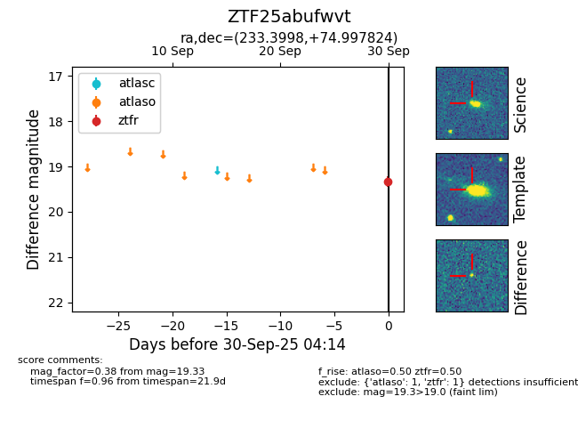

FINK: ZTF25abufwvt
Lasair: ZTF25abufwvt
ALeRCE: ZTF25abufwvt
ZTF25abufwvt (ztf,fink)
equatorial (ra, dec) = (233.3998,+74.99782)
galactic (l, b) = (110.6053,+37.98955)

last atlaso=nan, ztfr=19.33
1 atlaso, 1 ztfr detections